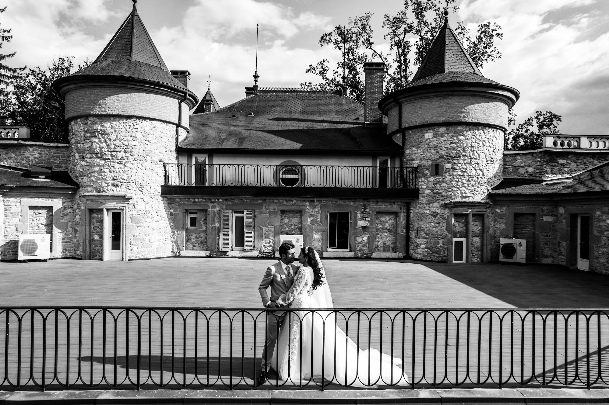
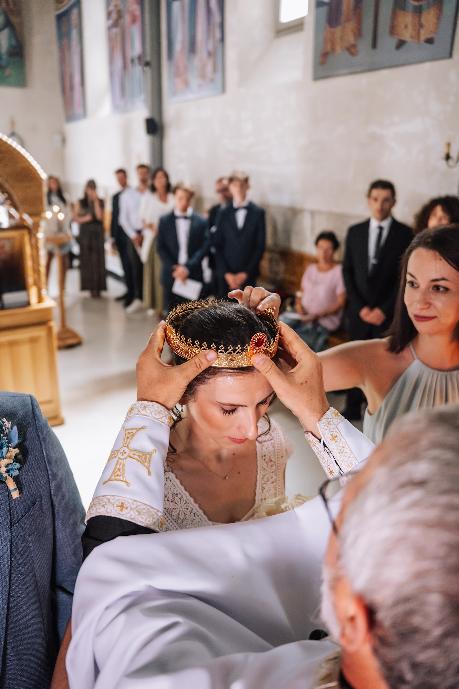
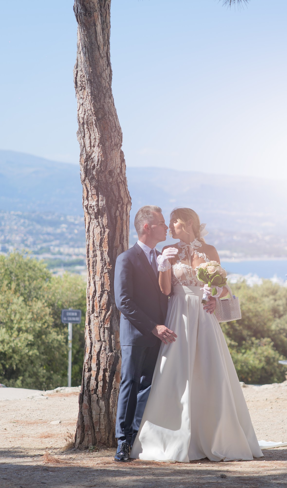
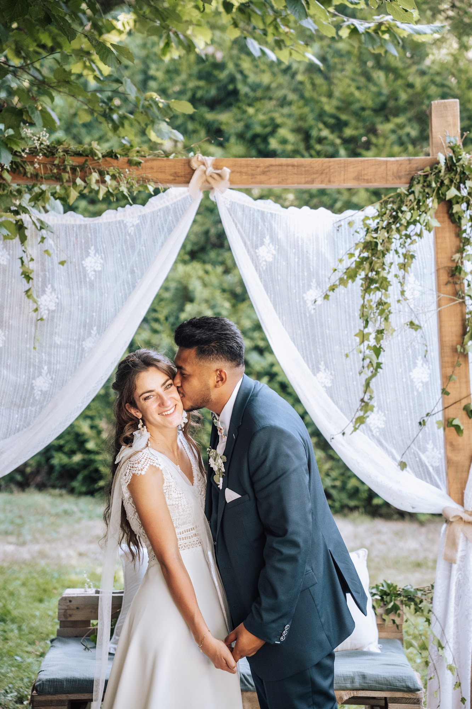
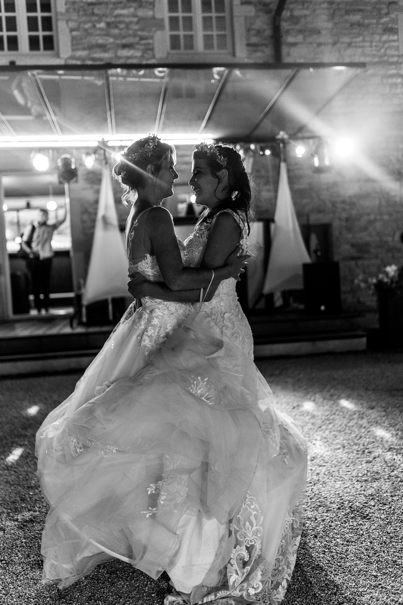
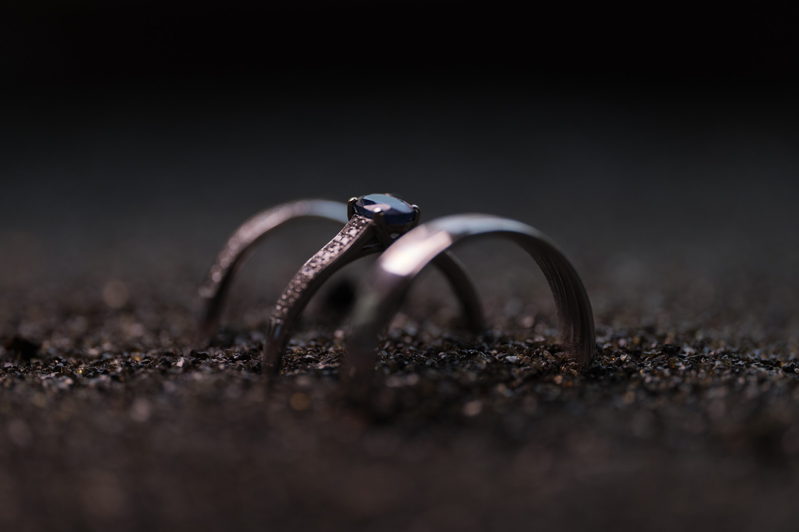
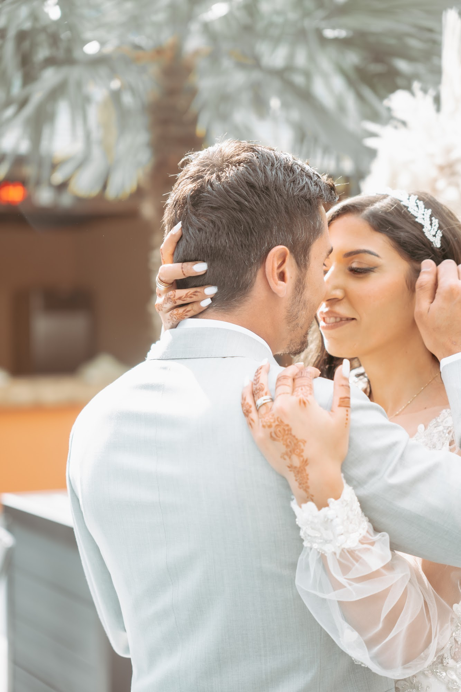
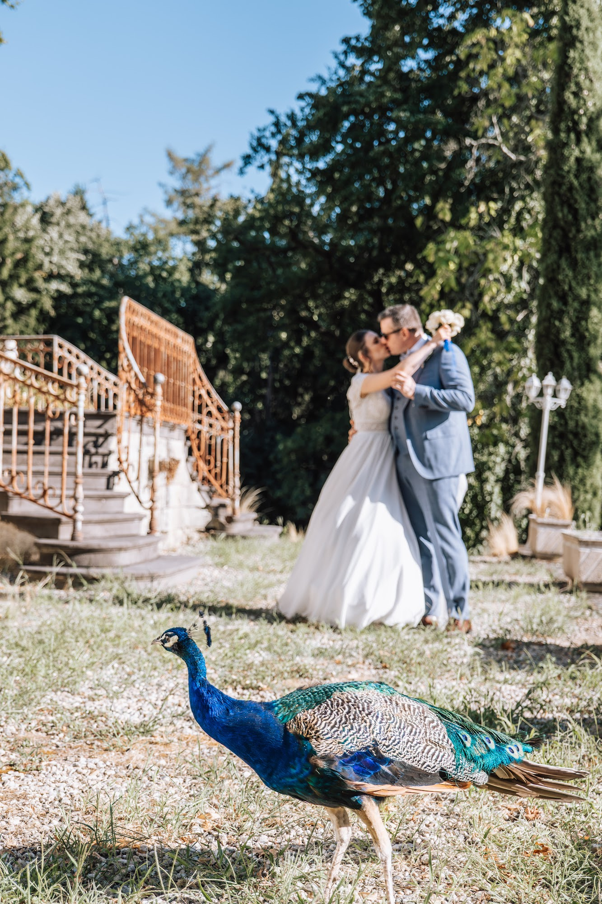

Photographe de mariage à Lyon
Je photographie les mariages à Lyon, en Rhône-Alpes et partout en France, avec une idée simple : vous laisser vivre votre journée et en garder les images les plus vraies. Un regard éditorial, une présence discrète, et des photos qui vous ressemblent, des préparatifs jusqu’à la dernière danse.

Un regard éditorial, des émotions vraies
Mon style mêle deux choses : le soin d’une image de magazine, dans la lumière et la composition, et la sincérité du reportage. Je ne vous fais pas poser pendant des heures. Je guide quelques minutes pour les portraits, puis je me fais oublier pour saisir ce qui se passe vraiment : le regard d’un père, un fou rire entre témoins, une main qui se serre pendant les discours.
Le résultat, ce n’est pas une collection de photos, mais le récit complet de votre journée, que vous aurez plaisir à revoir dans vingt ans.

Votre journée, des préparatifs à la soirée
Je peux vous suivre toute la journée ou seulement sur les moments clés. Les préparatifs posent l’ambiance : la robe, les détails, les derniers ajustements. Vient ensuite la cérémonie, civile, religieuse ou laïque, puis le cocktail, souvent le moment le plus détendu pour les photos de groupe et la séance couple. La soirée, enfin, avec l’entrée des mariés, les discours et la piste de danse.
Avant le jour J, nous construisons ensemble le déroulé, en tenant compte de la lumière et des contraintes du lieu. Vous savez exactement à quoi vous attendre, et vous pouvez profiter de chaque instant.

Photo et vidéo : un seul interlocuteur
Je suis photographe et vidéaste. Vous pouvez réserver la photo seule, la vidéo seule, ou les deux. Avec un seul interlocuteur, la journée est plus fluide : pas de prestataires qui se gênent, un même regard sur les images et un même soin dans le montage.

Mariages à Lyon, en Rhône-Alpes et au-delà

Je suis basé près de Lyon et j’interviens dans tout le Rhône, l’Isère, l’Ain, la Savoie, la Haute-Savoie et la Drôme : châteaux et domaines autour de Lyon, villages du Beaujolais, bords de lacs alpins. Je me déplace aussi partout en France et à l’étranger, de la Côte d’Azur jusqu’à Dubaï.
Chaque culture a ses rites et ses temps forts. Mariages civils, religieux, orientaux, orthodoxes ou laïques : je prends le temps de comprendre ce qui compte pour vous et pour vos familles, pour ne rien manquer.






Comment ça se passe
- Vous m’écrivez avec votre date et votre lieu, je vous réponds rapidement sur ma disponibilité.
- Nous échangeons sur votre projet et vos envies.
- Vous recevez un devis clair. La date est bloquée à la réservation.
- Avant le mariage, vous remplissez votre fiche mariage et nous préparons le déroulé ensemble.
- Après le mariage, vous recevez vos photos en haute définition dans une galerie privée en ligne.
Questions fréquentes
Combien de temps à l’avance faut-il réserver son photographe de mariage ?
Le plus tôt possible : les samedis de mai à septembre partent souvent un an à l’avance, parfois plus. Pour une date en semaine ou hors saison, quelques mois suffisent souvent. Écrivez-moi dès que votre date et votre lieu sont fixés.
Vous déplacez-vous en dehors de Lyon ?
Oui, dans toute la région Auvergne-Rhône-Alpes, partout en France et à l’étranger. Les éventuels frais de déplacement sont indiqués clairement dans le devis.
Proposez-vous la photo et la vidéo ?
Oui. Vous pouvez choisir la photo, la vidéo ou les deux. Avec un seul prestataire, la journée est plus fluide et les images gardent une vraie cohérence.
Comment recevons-nous nos photos ?
Dans une galerie privée en ligne, protégée par un mot de passe, d’où vous pouvez regarder, partager et télécharger vos photos en haute définition.
Votre date est-elle encore libre ? Écrivez-moi, je vous réponds rapidement.